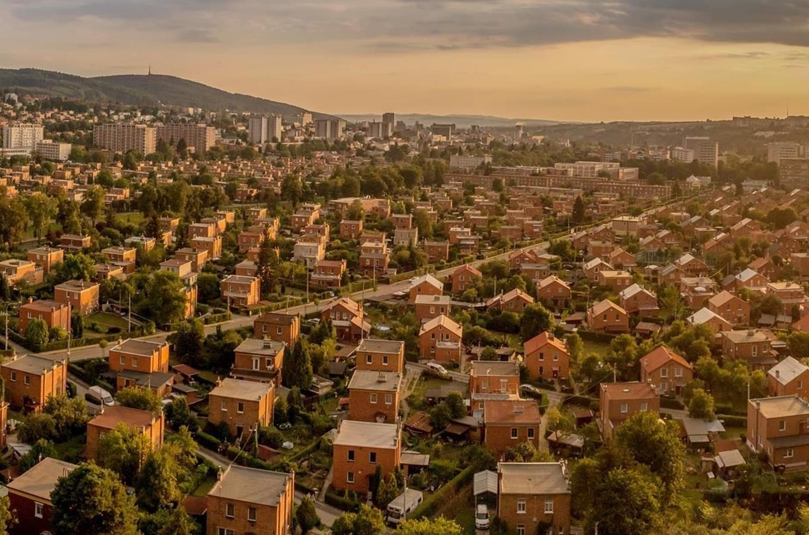
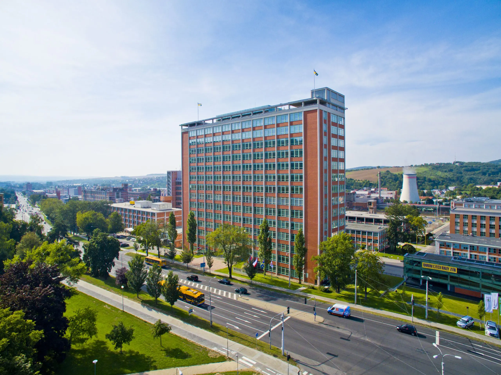
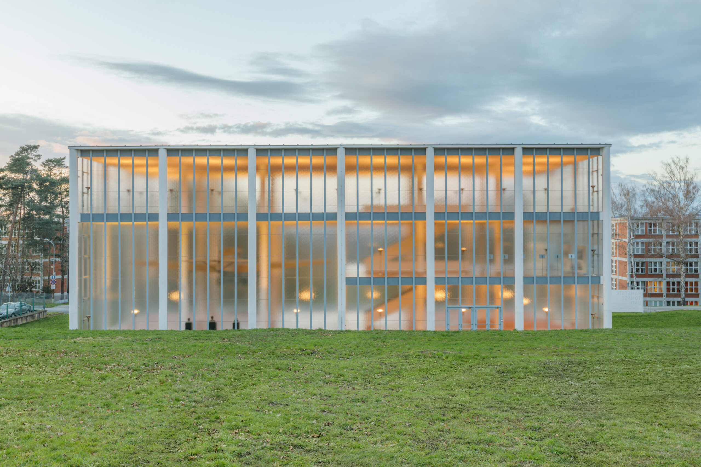
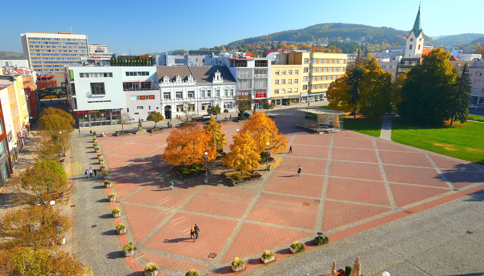

Discover a city shaped by the Baťa shoe empire, famous for its functionalist architecture, industrial heritage and modern urban design.
Zlín is a city in the Zlín Region of eastern Czechia. It became internationally known during the 20th century thanks to entrepreneur Tomáš Baťa, who transformed the city into an important centre of shoe production.
The city's development was closely connected to modern architecture and innovative urban planning. Today, Zlín is known for its functionalist buildings, industrial heritage and distinctive atmosphere.
Zlín Region
Czechia
Baťa shoe industry and functionalist architecture
Eastern Moravia
Baťa's Skyscraper, also known as Building 21, is one of the most famous landmarks in Zlín. It was completed in 1938 and served as the headquarters of the Baťa shoe company.
The building reflects the city's functionalist architecture and the company's focus on efficiency and innovation. One of its most unusual features was a working office inside an elevator, designed for the company's director.

The Tomáš Baťa Memorial is an important architectural landmark in Zlín. It was designed by architect František Lýdie Gahura in memory of Tomáš Baťa, the founder of the Baťa shoe company, who died in a plane crash in 1932.
The building is a remarkable example of functionalist architecture. Its simple design, large glass surfaces and carefully arranged interior reflect the modern ideas that shaped Zlín during the Baťa era.

Peace Square is located in the centre of Zlín and serves as an important public space for residents and visitors. It is surrounded by shops, cafés and buildings that reflect the city's development over time.
The square is a lively place for meeting friends, attending public events and exploring the city centre. It also provides a starting point for discovering Zlín's architecture and cultural attractions.

Approx. 74,000 residents
Approx. 103 km²
Early 20th century
Building 21